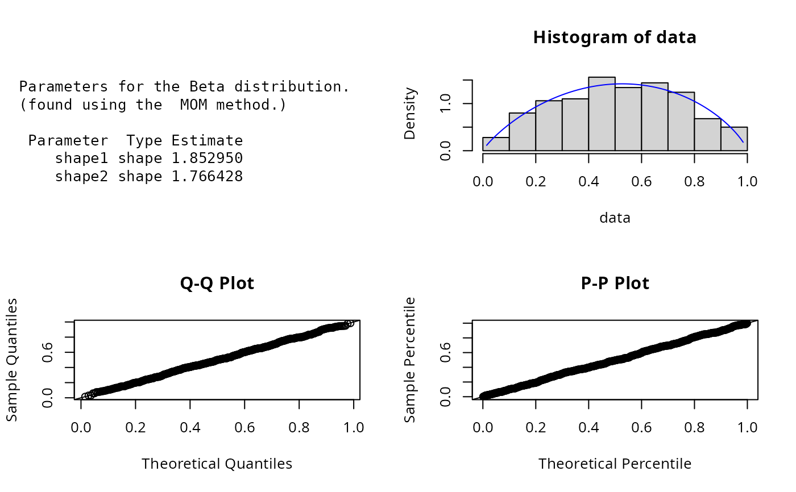
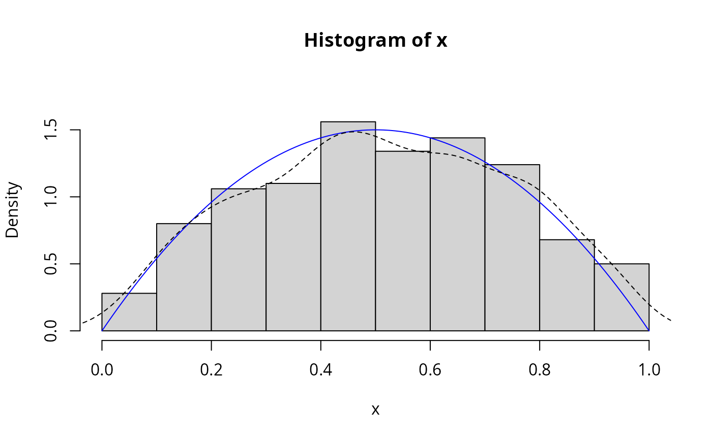

Beta.RdDensity, distribution, quantile, random number
generation, and parameter estimation functions for the beta distribution with parameters shape1 and shape2.
Parameter estimation can be based on a weighted or unweighted i.i.d. sample and can be carried out analytically or numerically.
dBeta(x, shape1 = 2, shape2 = 3, params = list(shape1, shape2), ...)
pBeta(q, shape1 = 2, shape2 = 3, params = list(shape1, shape2), ...)
qBeta(p, shape1 = 2, shape2 = 3, params = list(shape1, shape2), ...)
rBeta(n, shape1 = 2, shape2 = 3, params = list(shape1, shape2), ...)
eBeta(X, w, method = c("MOM", "numerical.MLE"), ...)
lBeta(
X,
w,
shape1 = 2,
shape2 = 3,
params = list(shape1, shape2),
logL = TRUE,
...
)
sBeta(X, w, shape1 = 2, shape2 = 3, params = list(shape1, shape2), ...)
iBeta(X, w, shape1 = 2, shape2 = 3, params = list(shape1, shape2), ...)Vector of quantiles.
Shape parameters.
A list that includes all named parameters.
Additional parameters.
Vector of probabilities.
Number of observations.
Sample observations.
Optional vector of sample weights.
Parameter estimation method.
logical, if TRUE lBeta gives the log-likelihood, otherwise the likelihood is given.
dBeta gives the density, pBeta the distribution function, qBeta the quantile function, rBeta generates random deviates, and eBeta estimates the parameters. lBeta provides the log-likelihood function, sBeta the observed score function, and iBeta the observed information matrix.
The dBeta(), pBeta(), qBeta(),and rBeta() functions serve as wrappers of the standard
dbeta, pbeta, qbeta, and rbeta functions
in the stats package. They allow for the shape parameters to be declared not only as
individual numerical values, but also as a list so parameter estimation can be carried out.
The beta distribution with parameters shape1=\(\alpha\) and shape2=\(\beta\) is given by
$$f(x) = \frac{x^{\alpha-1} (1-x)^{\beta-1}}{B(\alpha,\beta)}$$
where \(0 \le x \le 1\), \(\alpha>0\), \(\beta>0\), and \(B\) is the beta function.
Analytical parameter estimation is conducted using the method of moments. The parameter
estimates for \(\alpha\) and \(\beta\) are as given in the Engineering Statistics Handbook.
The log-likelihood function of the beta distribution is given by
$$l(\alpha, \beta | x) = (\alpha-1)\sum_{i} ln(x_i) + (\beta-1)\sum_{i}
ln(1-x_i) - ln B(\alpha,\beta).$$
Aryal & Nadarajah (2004) derived the score function and Fisher's information matrix for the 4-parameter beta function, from
which the 2-parameter cases can be obtained.
Johnson, N. L., Kotz, S. and Balakrishnan, N. (1995) Continuous Univariate Distributions,
volume 2, chapter 25, Wiley, New York.
Engineering Statistics Handbook
Bury, K. (1999) Statistical Distributions in Engineering, Chapter 14, pp.253-255,
Cambridge University Press.
Aryal, G. and Nadarajah, S. (2004) Information Matrix for Beta Distributions, Serdica Math. J. 30, 513-526.
ExtDist for other standard distributions.
# Parameter estimation for a distribution with known shape parameters
x <- rBeta(n=500, params=list(shape1=2, shape2=2))
est.par <- eBeta(x); est.par
#>
#> Parameters for the Beta distribution.
#> (found using the MOM method.)
#>
#> Parameter Type Estimate
#> shape1 shape 2.038166
#> shape2 shape 2.029917
#>
#>
plot(est.par)

# Fitted density curve and histogram
dens <- dBeta(x=seq(0,1,length=100), params=list(shape1=2, shape2=2))
hist(x, breaks=10, probability=TRUE, ylim = c(0,1.2*max(dens)))
lines(seq(0,1,length=100), dens, col="blue")
lines(density(x), lty=2)

# Extracting shape parameters
est.par[attributes(est.par)$par.type=="shape"]
#> $shape1
#> [1] 2.038166
#>
#> $shape2
#> [1] 2.029917
#>
# Parameter estimation for a distribution with unknown shape parameters
# Example from; Bury(1999) pp.253-255, parameter estimates as given by Bury are
# shape1 = 4.222 and shape2 = 6.317
data <- c(0.461, 0.432, 0.237, 0.113, 0.526, 0.278, 0.275, 0.309, 0.67, 0.428, 0.556,
0.402, 0.472, 0.226, 0.632, 0.533, 0.309, 0.417, 0.495, 0.241)
est.par <- eBeta(X=data, method="numerical.MLE"); est.par
#>
#> Parameters for the Beta distribution.
#> (found using the numerical.MLE method.)
#>
#> Parameter Type Estimate S.E.
#> shape1 shape 4.191737 1.283389
#> shape2 shape 6.304651 1.969371
#>
#>
plot(est.par)
# Log-likelihood, score function, and observed information matrix
lBeta(data, param=est.par)
#> [1] 10.5777
sBeta(data, param=est.par)
#> shape1 shape2
#> 3.857847e-07 -8.869954e-07
iBeta(data, param=est.par)
#> shape1 shape2
#> shape1 3.386125 -1.999060
#> shape2 -1.999060 1.438018
# Evaluating the precision of parameter estimation by the Hessian matrix.
H <- attributes(est.par)$nll.hessian;H
#> shape1 shape2
#> shape1 3.386125 -1.999060
#> shape2 -1.999060 1.438018
var <- solve(H)
se <- sqrt(diag(var)); se
#> shape1 shape2
#> 1.283389 1.969371